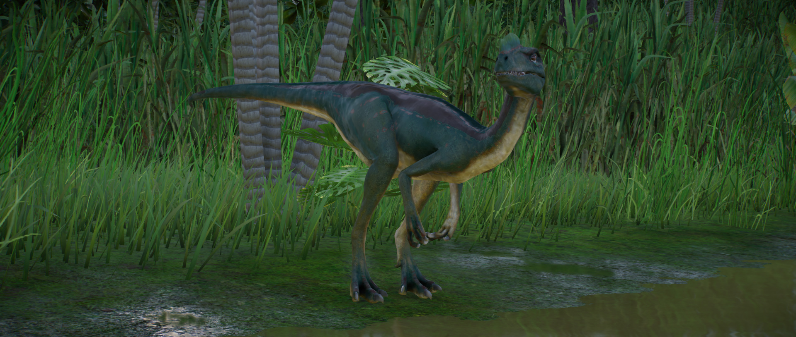

O pequeno terópode Proceratossauro é um dinossauro carnívoro e é famoso pela crista arrojada em seu focinho. Seu nome vem da crença, ao ser descoberto, de que o gênero era parente do Ceratossauro. No entanto, pesquisas posteriores descobriram que ele é, na verdade, um primo do Tiranossauro, embora muito menor, com cerca de 4 m de comprimento.